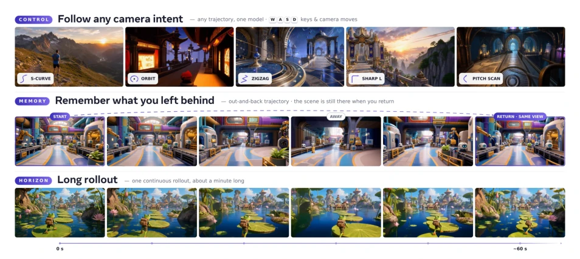
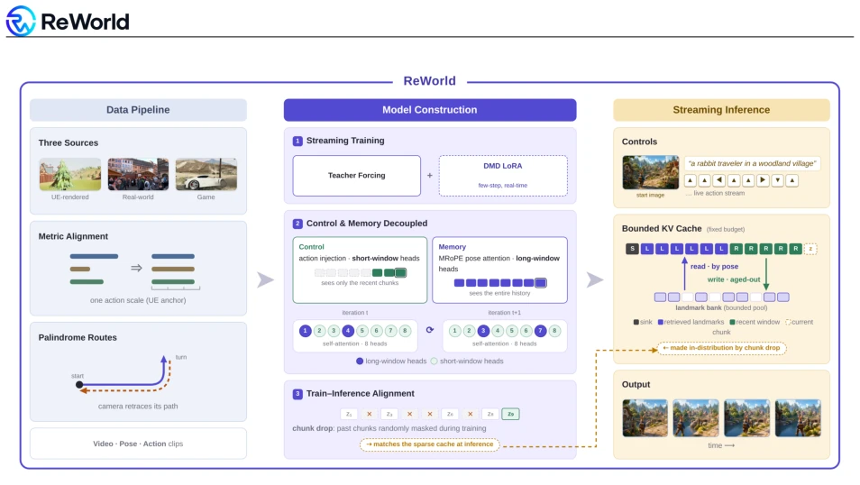
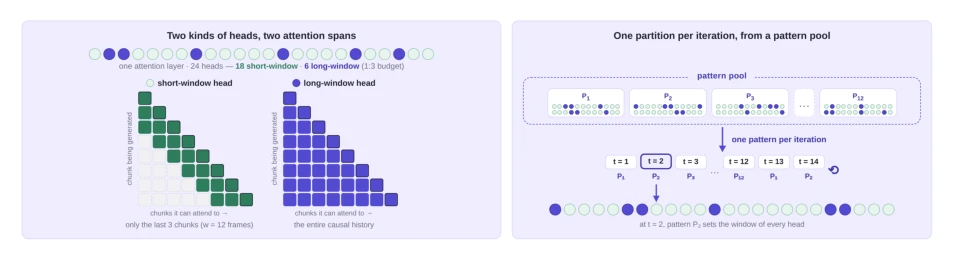
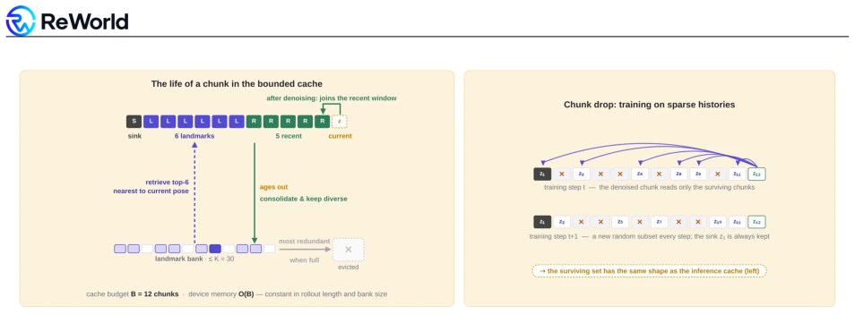
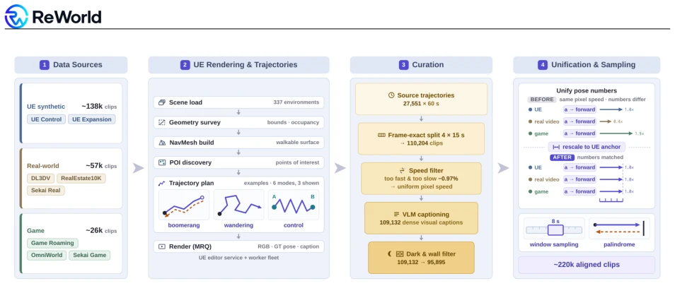
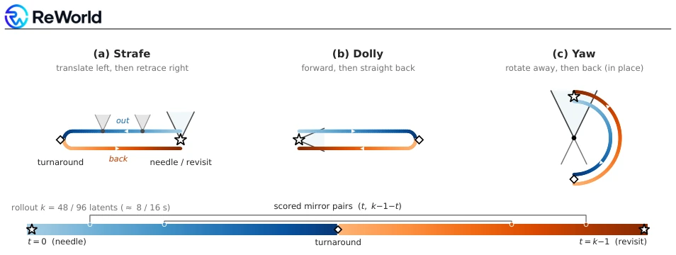
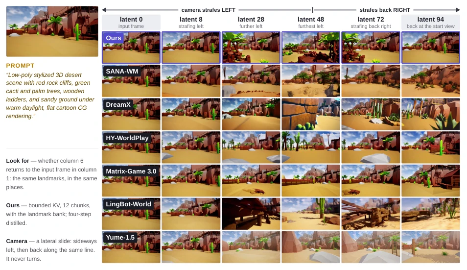
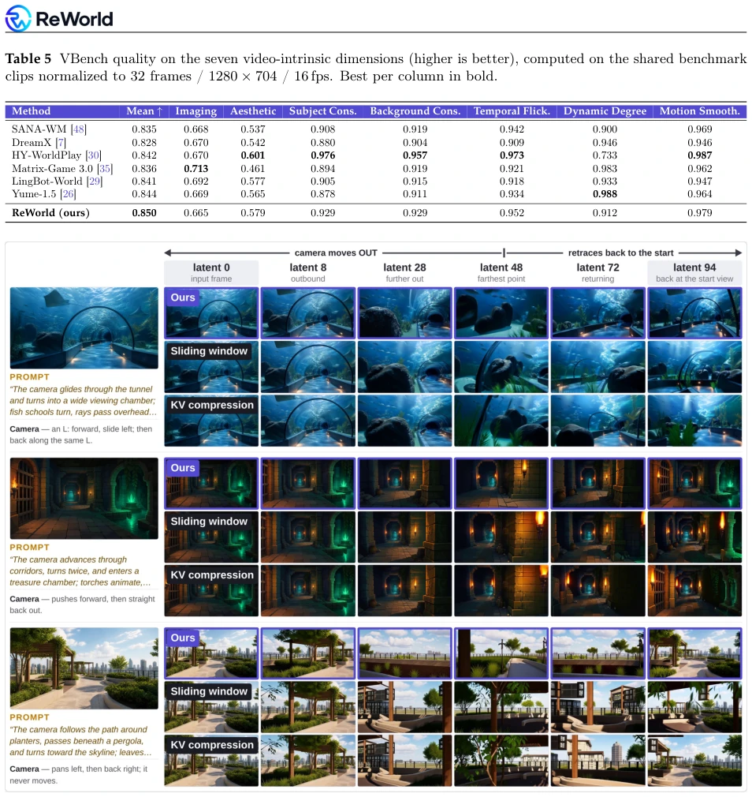
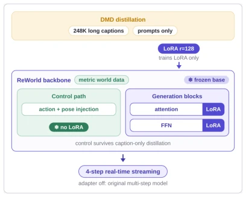

ReWorld's "divide and conquer" strategy is quite ingenious, forcibly decoupling control and memory via mixed attention windows: local heads manage control, global heads manage memory, supplemented by random routing to prevent overfitting. During inference, a landmark bank compresses the KV cache, aligned with chunk-drop training distributions. The results are indeed top-notch, achieving first place in control error and long-range memory recall. However, the essence relies on the ingenuity of data alignment and cache strategies rather than a subversion of model architecture. LoRA distillation ensures real-time performance, but whether the bank capacity limit of 30 landmarks can truly cope with infinite roaming remains uncertain. UE data constitutes 63%, so generalization to the real world is still questionable. In conclusion, engineering optimization triumphs over theoretical bottlenecks; deployment is stable but generalizability is doubtful. It is suitable for products but may not represent a breakthrough in general intelligence.
Interactive world models must simultaneously satisfy action following, scene memory, and real-time streaming generation. Existing systems often sacrifice one for the other: directly injecting action signals improves control but harms long-range memory [30]; relying solely on time RoPE makes it difficult to recall distant scenes [39]. Control depends on short windows, while memory depends on long windows; forcibly merging them during training leads to capability conflicts. Additionally, during inference, KV cache is constrained; sliding windows lose critical history, whereas full KV cache causes VRAM explosion. ReWorld aims to decouple these two requirements, achieving infinite long-range memory under limited budgets while maintaining high-fidelity control.

Figure 1 ReWorld follows camera intents (top), regenerates a revisited view after an out-and-back excursion (middle), and streams long rollouts (bottom).
Overall based on the Wan2.2 backbone, divided into training and inference stages. At the data layer, an eight-source mixed dataset is constructed, anchoring physical scale via UE rendering and utilizing palindrome trajectories to provide revisit supervision. During training, mixed attention windows are employed: 18 local heads focus on the most recent 12 frames to learn control, while 6 global heads focus on the full history to learn memory, with random head routing (switching global head sets per step) preventing capabilities from binding to specific heads. During inference, memory solidification is implemented: maintaining fixed 12 KV cache blocks, including sink, recent window, and 6 pose-retrieved landmarks. Aged chunks are stored in a bounded landmark bank, evicted based on spatial redundancy and recalled by pose during revisit. Chunk-drop random masking is incorporated during training to allow the model to adapt to sparse cache distributions. Finally, sampling is compressed to 4 steps via LoRA distillation to achieve real-time generation.

Figure 2 Overview of ReWorld. Left: a metric-aligned data pipeline places UE-rendered, real-world, and game footage on a single physical action scale, and palindrome routes—the camera retracing its own path—supply revisit supervision (Sec. 3). Middle: teacher-forcing training turns the bidirectional backbone into a streaming world model, with a DMD LoRA trained alongside for few-step real-time inference (Secs. 2.2 and 2.4); control (action injection, local short-window heads) and memory (MRoPE pose-indexed attention, global long-window heads) are decoupled, and the partition into global and local heads is switched every step through a fixed pool of random partitions so that neither capability binds to particular heads (Sec. 2.2); chunk-drop training masks random parts of the history, match

Figure 3 Mixed per-head attention windows, routed from a pattern pool. Left: local heads attend to the last w=12 frames (reactive control); global heads attend to the full causal history (long-range memory). Right: each optimizer step switches to the next of |P|=12 random head partitions, so neither ability binds to particular heads.

Figure 4 Memory consolidation under a fixed KV budget. Left: at inference the cache holds one sink, six pose- retrieved landmarks, and five recent chunks (B=12); a chunk aging out of the recent window is consolidated into the bounded landmark bank—kept sparse and diverse—and re-enters the cache when the camera returns nearby (a full bank evicts its most redundant member). Right: chunk-drop training randomly masks past chunks at every step, so such sparse caches are in-distribution.

Figure 6 The four-stage data pipeline. Eight UE, real-world, and game sources; an automated UE service renders 337 environments with NavMesh-based trajectory planning (the control pattern anchors each path at two points of interest and fills the segment between them with direction-balanced random motion); a curation funnel filters each pool and evens out on-screen speed by dropping too-fast and too-slow clips; unification then rescales the pose numbers to one shared metric scale — the same action moves the camera the same distance — before clip-level sampling.
Trained on a 220k clip mixed dataset, comparing against 6 baselines including SANA-WM, DreamX, etc. Evaluation covers control accuracy (RotErr/TransErr), long-range memory (palindrome trajectory revisit similarity), and video quality (VBench). ReWorld achieved the best rotation error of 11.95° in control, and long-range memory could still recover the start view at 384 latent steps, outperforming sliding window baselines. Ablation studies show that random head routing and chunk-drop training are crucial for maintaining the balance between control and memory; in inference cache strategies, the pose-retrieved landmark bank significantly outperforms sliding windows. Regarding video quality, ReWorld demonstrates a balance in dynamics and smoothness, without sacrificing motion for consistency like HY-WorldPlay.

Figure 7 Constructed palindrome trajectories. The camera moves out (blue) and retraces its path (orange), so the needle view at t=0 must be regenerated at t=k−1; scored mirror pairs (t, k−1−t) span at least half the rollout.

Figure 8 Qualitative memory comparison on a strafe-and-return rollout. All methods start from the same input frame and execute the same lateral palindrome—the camera strafes left, then retraces the same line back to the start, without ever turning—so the last column should reproduce the first: the same landmarks, in the same places. Columns are latents 0/8/28/48/72/94 of a k=96 rollout; each baseline is driven through its native control interface. ReWorld (top row; bounded cache B=12 with the landmark bank, four-step distilled) returns to the input view with the layout intact, whereas the baselines either drift off the commanded path or regenerate the revisited region with altered geometry.

Figure 9 Inference cache policies, qualitatively. On out-and-back trajectories, sliding window and KV compression drift or reinvent the revisited scene; the landmark cache (ours) returns to the start view.
其他图片Other Figures

Figure 5 Real-time distillation. A caption- domain DMD LoRA plugs into the frozen back- bone; the control path carries no LoRA.